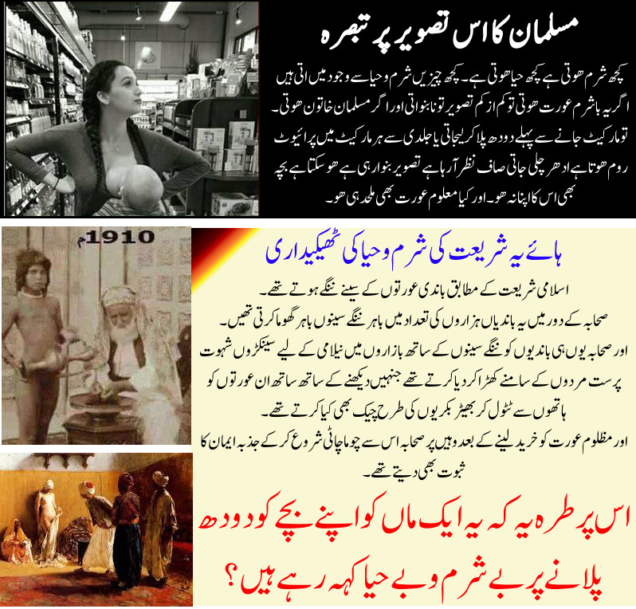

")

اس ماں کو سلام ہے کہ یہ اسلام اور اس جیسے عیسائی مذہب کے بنائے گئے غیر انسانی اور غیر فطری نظاموں کو چیلنج کرتے ہوئے ماں اور بچے دونوں کے صحیح حقوق کو معاشرے میں روشناس کروا رہی ہے کہ ماں کا حق ہے کہ جہاں بچہ اس سے دودھ مانگے تو وہاں پر وہ کسی کونے کھدرے کی تلاش میں ذلیل و خوار ہونے کی بجائے اور تنگ پڑنے کی بجائے سہولت کے ساتھ بچے کو دودھ پلا سکے۔ بچے کا حق ہے کہ جیسے ہی اسے بھوک لگے تو ماں اسے دودھ پلائے تاکہ وہ رو روکر ہلکان ہونے کی بجائے خوش و خرم رہ سکے، اور ماں کا حق یہ ہے کہ وہ بے چاری جو پہلے ہی بچے(یا کئی بچوں کی دیکھ بھال سے) ادھ موئی ہوئی ہوتی ہے، اس پر مزید بوجھ نہ پڑے کہ وہ لوگوں سے بھی بچنے کے چکر میں خود بھی ہلکان ہوتی پھرے اور بچے کو بھی رو رو کر ہلکان کروا ڈالے۔
جبکہ اسلام اور عیسائی مذہب ایسے ظالم ہیں کہ انہوں نے یہ غیر فطری پابندیاں لگا کر ایک ماں کے لیے بچے کو سزا بنا ڈالا۔ بے چاری ماں پہلے ہی بچے (یا پھر بہت سے بچوں) کی وجہ سے پہلے ہی انتہائی بوجھ کا شکار ہوتی ہے، اس پر یہ غیر فطرتی ظالم مذاہب الٹا کونے کھدرے اور تنہائی کا بہانہ کر کے شرم و حیا کے نام پر ماوؤں اور بچوں کی زندگی اور زیادہ جہنم بنانے پر تُلے ہوئے ہیں۔
تصویر میں غور سے دیکھئےکہ کیسے ماں بھی خوش و خرم ہے اور بچہ بھی خوش و خرم ہے۔ لیکن یہی اگر اسلامی ملک ہوتا تو ماں کے چہرے پر بھی کونہ کھدرا ڈھونڈنے کے لیے ہوائیں اڑ رہی ہوتیں، اور بچہ بھی بھوک سے تڑپ تڑپ کر رو رہا ہوتا۔
ملحد معاشرہ فطرت پر چلتے ہوئے انسان کی تربیت کرتا ہے جس کے بعد ماں کا یوں وقت پڑتے ہی دودھ پلانا کسی کو بھی عجیب نہیں لگتا اور لوگ اس پر جنسی طور پر Erect ہونے کی بجائے اسے بچے کی محبت اور ماں کی مامتا کے طور پر دیکھتے ہیں۔
مسئلہ یہ ہے کہ مسلمانوں کو ابھی یہ بات سمجھ نہیں آ سکتی جب تک کہ وہ خود اس مکمل تجربے سے نہ گذریں اور جب تک وہ اسلامی نامی مذہب کی برین واشن گسے مکمل طور پر اپنے دماغ کو آزاد نہ کروا لیں۔
مسلمانوں کی تربیت چونکہ علیحدہ ہوئی ہے، اس لیے یقینی طور پر وہ ماں کو دودھ پلاتا دیکھ کر Erect ہو جائیں گے۔ ان کی تربیت میں ایک پورے Chapter کی کمی ہے جو کہ مذہب نے ان سے چھین لیا ہے۔
اسلام: بے حیائی کا مذہب
اور اسلام کا اصلی چہرہ دیکھنے کے لیے یہ حقائق پڑھئے:
امام بیہقی نے اپنی کتاب سنن الکبریٰ میں روایت نقل کی ہے (لنک):
عن نافع ، عن ابن عمر ” أنه كان إذا اشترى جارية كشف عن ساقها ووضع يده بين ثدييها و على عجزها
ترجمہ: نافع نے صحابی ابن عمر سے روایت کی ہے: جب بھی ابن عمر کو کنیز خریدنی ہوتی تھی، تو وہ پہلے اس کنیز کے معائینے کے لیے پہلے اسکی ٹانگیں دیکھتے تھے اور پھر ہاتھوں سے اسکی چھاتیوں اور کولہوں کے ابھاروں کو پرکھتے تھے۔
سعودی مفتی اعظم البانی نے اس روایت کو 'صحیح' قرار دیا ہے (لنک)۔
مصنف عبدالرزاق میں شعبی سے روایت ہے (لنک):
13207 عبد الرزاق ، عن الثوري ، عن جابر ، عن الشعبي قال : " إذا كان الرجل يبتاع الأمة ، فإنه ينظر إلى كلها إلا الفرج " .
ترجمہ: ۔۔۔ شعبی کہتے ہیں: اگر کسی مرد کو کنیز خریدنی ہے، تو وہ اس کنیز کا پورا جسم دیکھ سکتا ہے سوائے شرمگاہ کےسوراخ کے۔
اور فتاویٰ عالمگیری (جو تمام دیوبندی و بریلوی حنفی مدارس میں پڑھائی جاتی ہے) میں درج ہے (لنک):
جامع صغیر میں مذکور ہے کہ اگر کسی شخص نے کوئی کنیز باندی خریدنے کا قصد کیا تو کوئی ڈر نہیں ہے کہ وہ اسکی پنڈلیاں و سینہ و دونوں ہاتھ چھوئے اور کھلے ہوئے اعضاء کی طرف دیکھے۔
اور صحابہ ان سرِ بازار برہنہ بکتی ہوئی لاچار کنیز عورتوں کو کیسے بھیڑ بکریوں کی طرح خریدتے تھے، اسکے لیے یہ روایت پڑھئے:
امام ابن ابی شیبہ نے اپنی کتاب المصنف میں نقل کیا ہے (لنک):
حدثنا جرير عن منصور عن مجاهد قال : كنت مع ابن عمر أمشي في السوق فإذا نحن بناس من النخاسين قد اجتمعوا على جارية يقلبونها ، فلما رأوا ابن عمر تنحوا وقالوا : ابن عمر قد جاء ، فدنا منها ابن عمر فلمس شيئا من جسدها وقال : أين أصحاب هذه الجارية ، إنما هي سلعة
ترجمہ: مجاہد کہتے ہیں: میں ابن عمر کے ساتھ غلاموں کے نیلامی والے بازار سے گذر رہا تھا۔ وہاں ہم نے غلاموں کے چند تاجروں کو دیکھا جو کہ ایک کنیز عورت کے گرد جمع تھے اور اسکو جانچنے کے لیے معائینہ کر رہے تھے۔ جب انہوں نے ابن عمر کو دیکھا تو انہوں نے ابن عمر کو روک لیا اور کہا کہ ابن عمر آئے ہیں۔ پھر ابن عمر اس کنیز عورت کے پاس آئے، انہوں نے اسکے جسم کے کچھ حصوں کو ٹٹولا اور پھر کہا: اس کنیز عورت کا مالک کون ہے؟ یہ (کنیز) ایک قیمتی تجارتی مال ہے۔
امام احمد بن حنبل کے بیٹے عبداللہ اپنی کتاب مسائل الإمام أحمد میں لکھتے ہیں (لنک):
حدثنا علي بن عثمان قال حدثنا حماد عن علي بن زيد عن أيوب بن عبدالله اللخمي أن ابن عمر قال وقع في سهمي يوم جلولا جارية كأن عنقها إبريق فضة ، فقال ابن عمر : فما ملكت نفسي حتى وثبت إليها فجعلت أقبلها والناس ينظرون
ترجمہ:
عبداللہ ابن عمر (خلیفہ دوم کے بیٹے اور کبیر صحابی) کہتے ہیں کہ جلولا کی جنگ کے دن میرے حصے میں ایک کنیز باندی آئی۔ اُسکی گردن صراحی کی طرح لمبی گداز تھی۔ ابن عمر کہتے ہیں کہ مجھے اپنے پر قابو نہ ہوا اور میں اُسی وقت اس پر چڑھ دوڑا اور اسکے بوسے لینا شروع کر دیے جبکہ لوگ میری طرف دیکھ رہے تھے۔
اور باندیوں کے متعلق درجنوں مزید ایسے ہی شرمناک اسلامی احکامات دیکھنے کے لیے پڑھئے ہمارا آرٹیکل غلامی: اسلام کا انسانیت پر بدترین ظلم